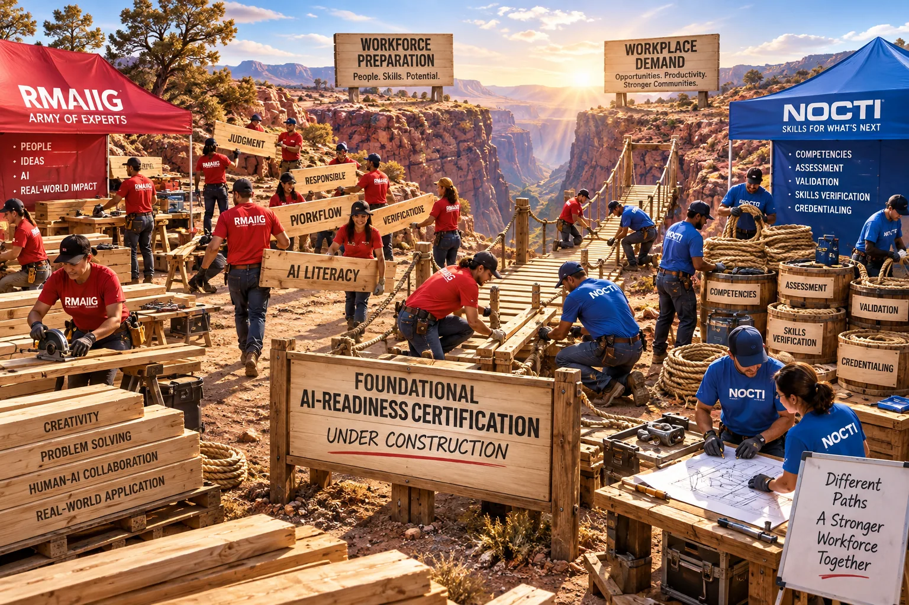
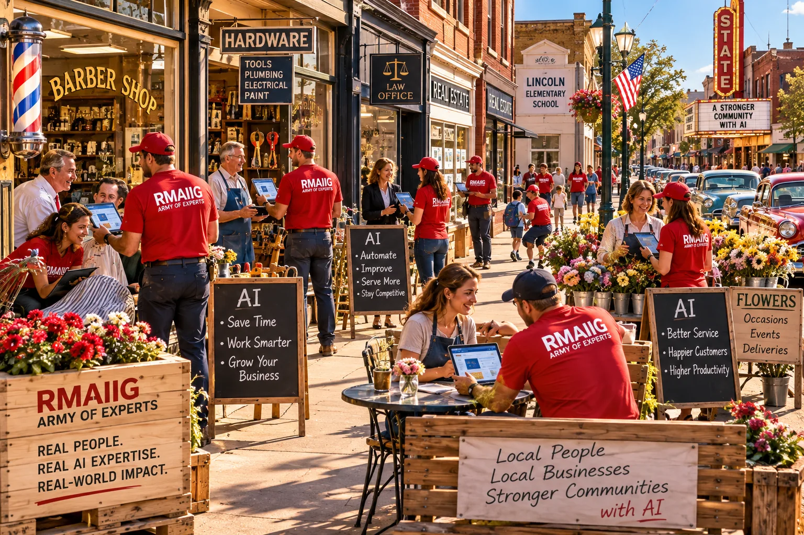
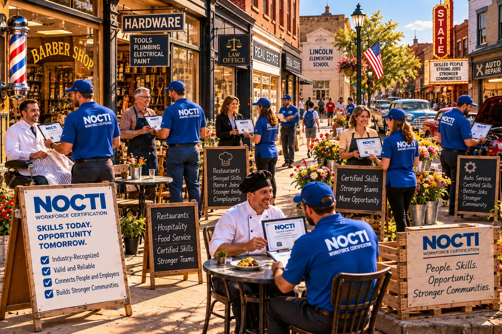

Building the AI-Readiness Bridge
How RMAIIG and NOCTI Combine Their Expertise to Build a Foundational AI Workforce Certification
This paper builds on Accelerating the AI-Ready Workforce, which describes how a foundational AI-readiness certification can bridge rapidly expanding workforce preparation with growing workplace demand.
Neither an AI expertise organization nor a workforce-certification organization can build this bridge effectively alone. Creating a credible foundational AI-readiness certification requires deep, current understanding of AI—how it is being used, what people need to know, and what safe and productive use looks like—combined with the specialized expertise required to translate emerging workplace capabilities into a rigorous, trusted credential. RMAIIG and NOCTI are prepared to bring those capabilities together to build the bridge.
An Army of AI Experts
RMAIIG represents the continuation of a community-building model with roots stretching back approximately 30 years to Dan Murray and the Rocky Mountain Internet community. That community formed around one transformational technology—the Internet—and its model has now been repurposed around another: artificial intelligence. Today, RMAIIG is a professionally run organization of approximately 8,000 people, with specialized communities spanning technical AI, education, business, safety, legal, social impact and other domains.
That scale represents much more than membership. It creates an army of experts and a deep reservoir of subject-matter expertise that can be drawn upon as foundational AI capabilities are proposed, challenged and refined. Across the organization, people are seeing how AI is actually being used, how people are learning it, where productive applications are emerging, what safe and responsible use requires, and how those capabilities vary across professions and environments. RMAIIG’s ambition is not simply to convene that expertise, but to translate what its community is learning into capabilities that enable others to use AI safely, productively and confidently.
{kind=link}

Six Decades of Workforce Certification
NOCTI brings the complementary expertise. For more than 60 years, it has helped define and verify workforce readiness across hundreds of occupational and technical domains, developing the institutional knowledge required to translate workplace requirements into competencies, competencies into measurable skills, and demonstrated skills into trusted credentials.
That history creates a responsibility to help unlock the enormous effort now being applied to AI workforce preparation. Workers need identifiable and demonstrable AI capabilities. Educators and training organizations need meaningful capabilities around which preparation can form. Employers need a trusted way to recognize the skills that can improve productivity across occupations. NOCTI provides the credentialing discipline and infrastructure necessary to turn emerging AI capability into something that can be assessed, verified and recognized.
{kind=link}

Building the Bridge Together
The collaboration is not simply RMAIIG handing NOCTI a list of AI skills, nor NOCTI independently determining what AI readiness should mean. RMAIIG and NOCTI can bring AI practitioners and credentialing experts together with educators, school districts, workforce organizations, employers and other industry leaders to identify what foundational AI readiness should actually represent.
Candidate capabilities can be identified, organized and drafted, then deliberately tested against both sides of the workforce equation. Educators, trainers and workforce organizations can help determine whether the proposed capabilities are understandable and can be meaningfully developed through preparation. Employers can determine whether those same capabilities are relevant, recognizable and connected to productive AI-enabled work. That feedback returns to the working group, the capabilities are refined, and the process iterates until preparation requirements, workplace relevance and assessability converge.
NOCTI can then apply its formal certification-development processes to distill that collective intelligence into defined, assessable and verifiable foundational AI capability. RMAIIG’s 8,000-person ecosystem means the effort does not have to create an AI subject-matter community from scratch, while NOCTI’s six decades of certification experience means it does not have to invent the machinery for translating expertise into a trusted workforce credential. Their collaboration accelerates the creation of the certification itself by bringing together two capabilities that already exist at scale.
{kind=link}
The Bridge Neither Could Build Alone
The result is a foundational AI-readiness certification informed by an army of people actively working with AI and constructed through an organization with more than six decades of experience turning workforce requirements into trusted credentials. Different educational and training pathways can prepare people toward that common destination, individuals can demonstrate the resulting capability, and workplaces can recognize and request it.
Together, RMAIIG and NOCTI can build the bridge neither could build alone—and accelerate the movement of AI capability from preparation into the workplace.